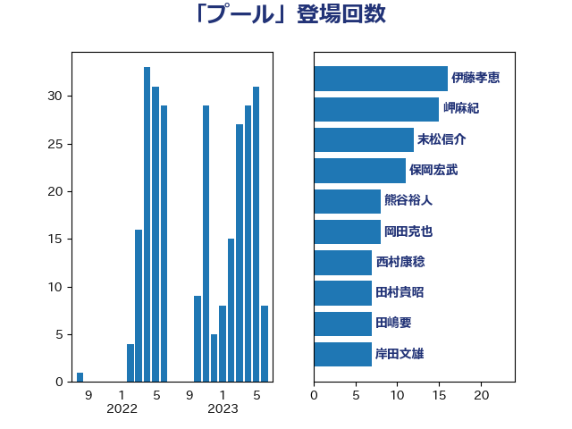

単語「プール」

| 伊藤孝恵 | 国民民主党 | 16 回 |
| 岬麻紀 | 日本維新の会 | 15 回 |
| 末松信介 | 自由民主党 | 12 回 |
| 保岡宏武 | 自由民主党 | 11 回 |
| 熊谷裕人 | 立憲民主党 | 8 回 |
| 岡田克也 | 立憲民主党 | 8 回 |
| 西村康稔 | 自由民主党 | 7 回 |
| 田村貴昭 | 日本共産党 | 7 回 |
| 田嶋要 | 立憲民主党 | 7 回 |
| 岸田文雄 | 自由民主党 | 7 回 |
| 自見はなこ | 自由民主党 | 6 回 |
| 馬淵澄夫 | 立憲民主党 | 4 回 |
| 鈴木俊一 | 自由民主党 | 4 回 |
| 逢坂誠二 | 立憲民主党 | 4 回 |
| 福山哲郎 | 立憲民主党 | 4 回 |
| 斉藤鉄夫 | 公明党 | 4 回 |
| 吉田統彦 | 立憲民主党 | 4 回 |
| 金子道仁 | 日本維新の会 | 3 回 |
| 蓮舫 | 立憲民主党 | 3 回 |
| 福島伸享 | 無所属 | 3 回 |
| 山本香苗 | 公明党 | 3 回 |
| 大島敦 | 立憲民主党 | 3 回 |
| 城井崇 | 立憲民主党 | 3 回 |
| 仁木博文 | 無所属 | 3 回 |
| 高橋千鶴子 | 日本共産党 | 2 回 |
| 赤木正幸 | 日本維新の会 | 2 回 |
| 谷田川元 | 立憲民主党 | 2 回 |
| 萩生田光一 | 自由民主党 | 2 回 |
| 稲津久 | 公明党 | 2 回 |
| 福島みずほ | 社会民主党 | 2 回 |
| 浜口誠 | 国民民主党 | 2 回 |
| 永岡桂子 | 自由民主党 | 2 回 |
| 櫛渕万里 | れいわ新選組 | 2 回 |
| 枝野幸男 | 立憲民主党 | 2 回 |
| 本村伸子 | 日本共産党 | 2 回 |
| 星北斗 | 自由民主党 | 2 回 |
| 上田清司 | 国民民主党 | 2 回 |
| 高橋光男 | 公明党 | 1 回 |
| 阿部知子 | 立憲民主党 | 1 回 |
| 長峯誠 | 自由民主党 | 1 回 |
| 金城泰邦 | 公明党 | 1 回 |
| 里見隆治 | 公明党 | 1 回 |
| 進藤金日子 | 自由民主党 | 1 回 |
| 近藤昭一 | 立憲民主党 | 1 回 |
| 辻元清美 | 立憲民主党 | 1 回 |
| 越智隆雄 | 自由民主党 | 1 回 |
| 赤嶺政賢 | 日本共産党 | 1 回 |
| 角田秀穂 | 公明党 | 1 回 |
| 西田昌司 | 自由民主党 | 1 回 |
| 落合貴之 | 立憲民主党 | 1 回 |
| 芳賀道也 | 国民民主党 | 1 回 |
| 舩後靖彦 | れいわ新選組 | 1 回 |
| 神津たけし | 立憲民主党 | 1 回 |
| 石橋通宏 | 立憲民主党 | 1 回 |
| 石川大我 | 立憲民主党 | 1 回 |
| 石井章 | 日本維新の会 | 1 回 |
| 石井拓 | 自由民主党 | 1 回 |
| 矢倉克夫 | 公明党 | 1 回 |
| 田島麻衣子 | 立憲民主党 | 1 回 |
| 玄葉光一郎 | 立憲民主党 | 1 回 |
| 津島淳 | 自由民主党 | 1 回 |
| 池下卓 | 日本維新の会 | 1 回 |
| 梅谷守 | 立憲民主党 | 1 回 |
| 林芳正 | 自由民主党 | 1 回 |
| 松野明美 | 日本維新の会 | 1 回 |
| 新藤義孝 | 自由民主党 | 1 回 |
| 徳永エリ | 立憲民主党 | 1 回 |
| 市村浩一郎 | 日本維新の会 | 1 回 |
| 工藤彰三 | 自由民主党 | 1 回 |
| 岡田直樹 | 自由民主党 | 1 回 |
| 山崎誠 | 立憲民主党 | 1 回 |
| 山崎正恭 | 公明党 | 1 回 |
| 小田原潔 | 自由民主党 | 1 回 |
| 小池晃 | 日本共産党 | 1 回 |
| 寺田静 | 無所属 | 1 回 |
| 寺田学 | 立憲民主党 | 1 回 |
| 守島正 | 日本維新の会 | 1 回 |
| 大塚耕平 | 国民民主党 | 1 回 |
| 國場幸之助 | 自由民主党 | 1 回 |
| 古川直季 | 自由民主党 | 1 回 |
| 伊藤渉 | 公明党 | 1 回 |
| 伊藤孝江 | 公明党 | 1 回 |
| 井上英孝 | 日本維新の会 | 1 回 |
| 井上哲士 | 日本共産党 | 1 回 |
| 中西健治 | 自由民主党 | 1 回 |
| 中島克仁 | 立憲民主党 | 1 回 |
| 中司宏 | 日本維新の会 | 1 回 |
| 三木圭恵 | 日本維新の会 | 1 回 |
| ながえ孝子 | 無所属 | 1 回 |
| たがや亮 | れいわ新選組 | 1 回 |